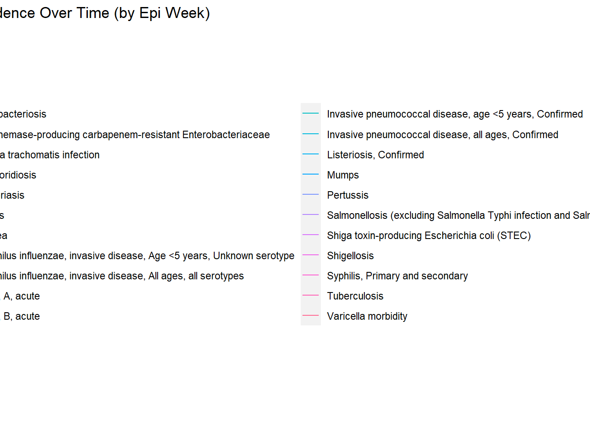
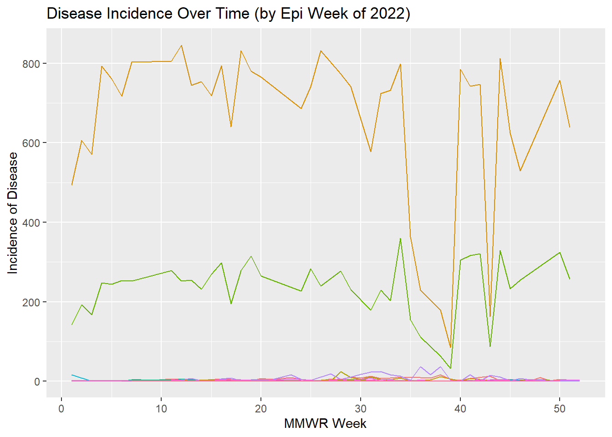
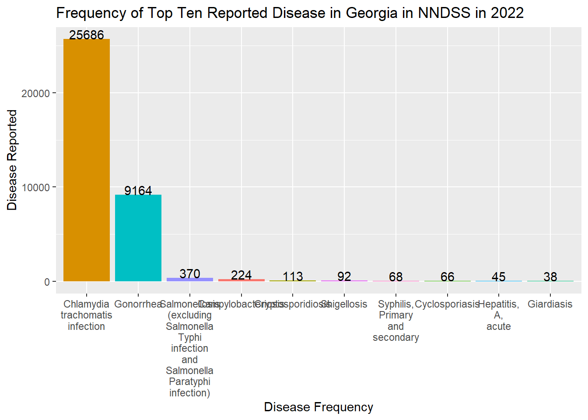
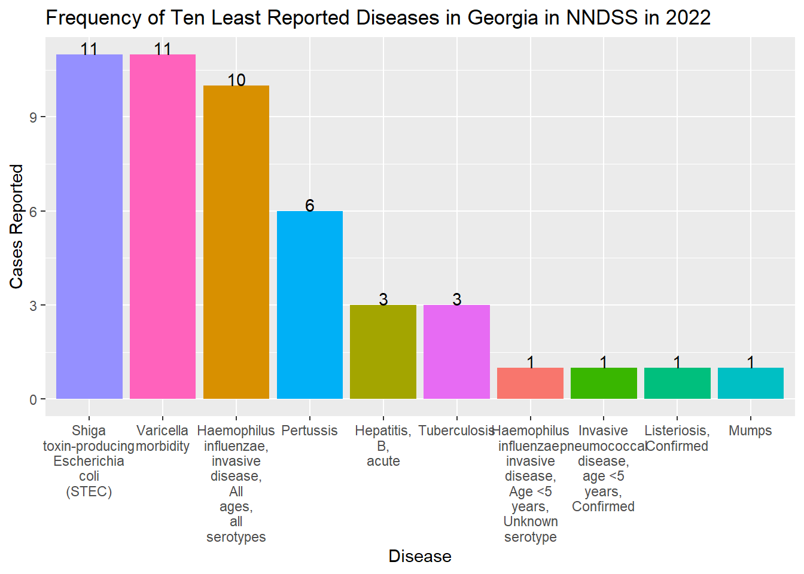
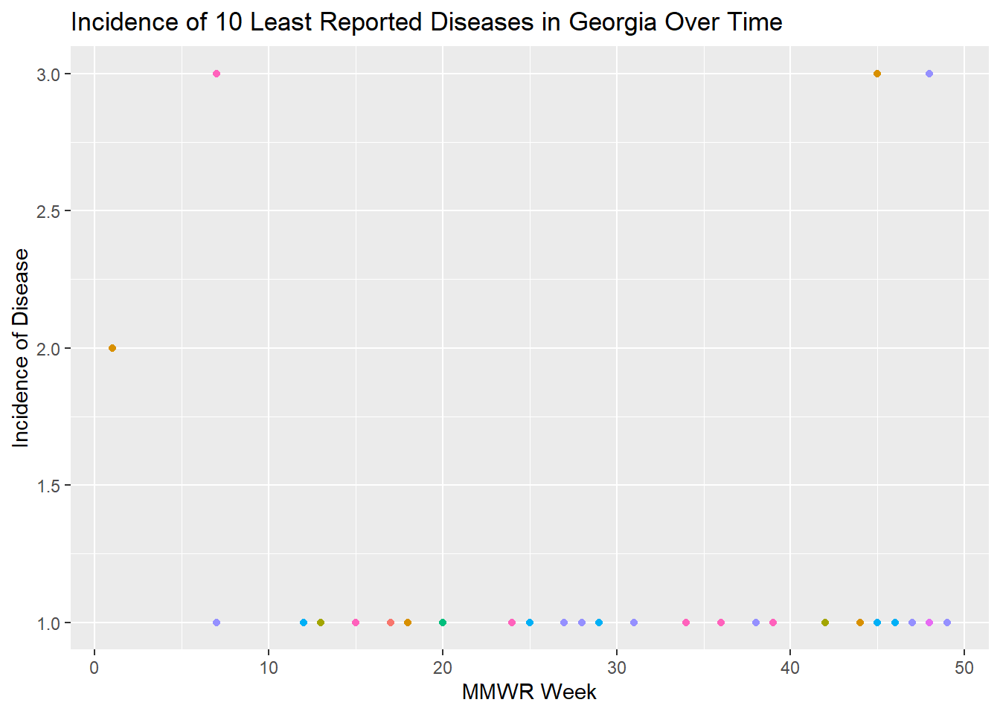

This data comes from the Centers for Disease Control and Prevention’s National Notifiable Diseases Surveillance System (NNDSS). Every week the CDC posts data received from the NNDSS system by the 50 states and US territories. This data set in particular was posted on 01.26.2023.
Load and clean the data…
# Load necessary packages...library(tidyverse)
Warning: package 'tidyverse' was built under R version 4.2.2
Warning: package 'ggplot2' was built under R version 4.2.2
Warning: package 'tidyr' was built under R version 4.2.2
Warning: package 'readr' was built under R version 4.2.2
Warning: package 'purrr' was built under R version 4.2.2
Warning: package 'dplyr' was built under R version 4.2.2
Warning: package 'stringr' was built under R version 4.2.2
Warning: package 'forcats' was built under R version 4.2.2
Warning: package 'lubridate' was built under R version 4.2.2
── Attaching core tidyverse packages ──────────────────────── tidyverse 2.0.0 ──
✔ dplyr 1.1.0 ✔ readr 2.1.4
✔ forcats 1.0.0 ✔ stringr 1.5.0
✔ ggplot2 3.4.1 ✔ tibble 3.1.8
✔ lubridate 1.9.2 ✔ tidyr 1.3.0
✔ purrr 1.0.1
── Conflicts ────────────────────────────────────────── tidyverse_conflicts() ──
✖ dplyr::filter() masks stats::filter()
✖ dplyr::lag() masks stats::lag()
ℹ Use the conflicted package (<http://conflicted.r-lib.org/>) to force all conflicts to become errors
# Loading the raw data set.RawNNDSS <- readr::read_csv("data/NNDSS_Weekly_Data.csv")
Rows: 424130 Columns: 16
── Column specification ────────────────────────────────────────────────────────
Delimiter: ","
chr (9): Reporting Area, Label, Current week, flag, Previous 52 weeks Max, f...
dbl (7): Current MMWR Year, MMWR WEEK, Current week, Previous 52 week Max, C...
ℹ Use `spec()` to retrieve the full column specification for this data.
ℹ Specify the column types or set `show_col_types = FALSE` to quiet this message.
## Let's take a look...summary(RawNNDSS)
Reporting Area Current MMWR Year MMWR WEEK Label
Length:424130 Min. :2022 Min. : 1.00 Length:424130
Class :character 1st Qu.:2022 1st Qu.:11.00 Class :character
Mode :character Median :2022 Median :25.00 Mode :character
Mean :2022 Mean :25.13
3rd Qu.:2022 3rd Qu.:39.00
Max. :2023 Max. :52.00
Current week Current week, flag Previous 52 week Max
Min. : 1.0 Length:424130 Min. : 0.0
1st Qu.: 1.0 Class :character 1st Qu.: 0.0
Median : 3.0 Mode :character Median : 0.0
Mean : 107.5 Mean : 16.8
3rd Qu.: 16.0 3rd Qu.: 2.0
Max. :17162.0 Max. :31207.0
NA's :387848 NA's :54813
Previous 52 weeks Max, flag Cumulative YTD Current MMWR Year
Length:424130 Min. : 1
Class :character 1st Qu.: 2
Mode :character Median : 11
Mean : 1758
3rd Qu.: 74
Max. :1405282
NA's :297627
Cumulative YTD Current MMWR Year, flag Cumulative YTD Previous MMWR Year
Length:424130 Min. : 1
Class :character 1st Qu.: 2
Mode :character Median : 10
Mean : 2012
3rd Qu.: 75
Max. :1649210
NA's :283732
Cumulative YTD Previous MMWR Year, flag LOCATION1 LOCATION2
Length:424130 Length:424130 Length:424130
Class :character Class :character Class :character
Mode :character Mode :character Mode :character
sort_order geocode
Min. :2.022e+10 Length:424130
1st Qu.:2.022e+10 Class :character
Median :2.022e+10 Mode :character
Mean :2.022e+10
3rd Qu.:2.022e+10
Max. :2.023e+10
str(RawNNDSS)
spc_tbl_ [424,130 × 16] (S3: spec_tbl_df/tbl_df/tbl/data.frame)
$ Reporting Area : chr [1:424130] "US RESIDENTS" "NEW ENGLAND" "CONNECTICUT" "MAINE" ...
$ Current MMWR Year : num [1:424130] 2022 2022 2022 2022 2022 ...
$ MMWR WEEK : num [1:424130] 10 10 10 10 10 10 10 10 10 10 ...
$ Label : chr [1:424130] "Anthrax" "Anthrax" "Anthrax" "Anthrax" ...
$ Current week : num [1:424130] NA NA NA NA NA NA NA NA NA NA ...
$ Current week, flag : chr [1:424130] "-" "-" "-" "-" ...
$ Previous 52 week Max : num [1:424130] 0 0 0 0 0 0 0 0 0 0 ...
$ Previous 52 weeks Max, flag : chr [1:424130] "-" "-" "-" "-" ...
$ Cumulative YTD Current MMWR Year : num [1:424130] NA NA NA NA NA NA NA NA NA NA ...
$ Cumulative YTD Current MMWR Year, flag : chr [1:424130] "-" "-" "-" "-" ...
$ Cumulative YTD Previous MMWR Year : num [1:424130] NA NA NA NA NA NA NA NA NA NA ...
$ Cumulative YTD Previous MMWR Year, flag: chr [1:424130] "-" "-" "-" "-" ...
$ LOCATION1 : chr [1:424130] NA NA "CONNECTICUT" "MAINE" ...
$ LOCATION2 : chr [1:424130] "US RESIDENTS" "NEW ENGLAND" NA NA ...
$ sort_order : num [1:424130] 2.02e+10 2.02e+10 2.02e+10 2.02e+10 2.02e+10 ...
$ geocode : chr [1:424130] NA NA "POINT (-72.738288 41.575155)" "POINT (-69.06137 45.117911)" ...
- attr(*, "spec")=
.. cols(
.. `Reporting Area` = col_character(),
.. `Current MMWR Year` = col_double(),
.. `MMWR WEEK` = col_double(),
.. Label = col_character(),
.. `Current week` = col_double(),
.. `Current week, flag` = col_character(),
.. `Previous 52 week Max` = col_double(),
.. `Previous 52 weeks Max, flag` = col_character(),
.. `Cumulative YTD Current MMWR Year` = col_double(),
.. `Cumulative YTD Current MMWR Year, flag` = col_character(),
.. `Cumulative YTD Previous MMWR Year` = col_double(),
.. `Cumulative YTD Previous MMWR Year, flag` = col_character(),
.. LOCATION1 = col_character(),
.. LOCATION2 = col_character(),
.. sort_order = col_double(),
.. geocode = col_character()
.. )
- attr(*, "problems")=<externalptr>
## I'm kind of only interested in Georgia since I live here now...GeorgiaNNDSS <- RawNNDSS %>%filter(`Reporting Area`=="GEORGIA")summary(GeorgiaNNDSS)
Reporting Area Current MMWR Year MMWR WEEK Label
Length:6059 Min. :2022 Min. : 1.00 Length:6059
Class :character 1st Qu.:2022 1st Qu.:11.00 Class :character
Mode :character Median :2022 Median :25.00 Mode :character
Mean :2022 Mean :25.13
3rd Qu.:2022 3rd Qu.:39.00
Max. :2023 Max. :52.00
Current week Current week, flag Previous 52 week Max
Min. : 1.00 Length:6059 Min. : 0.00
1st Qu.: 1.00 Class :character 1st Qu.: 0.00
Median : 3.00 Mode :character Median : 0.00
Mean : 97.55 Mean : 10.57
3rd Qu.: 13.00 3rd Qu.: 2.00
Max. :866.00 Max. :1362.00
NA's :5656 NA's :746
Previous 52 weeks Max, flag Cumulative YTD Current MMWR Year
Length:6059 Min. : 1
Class :character 1st Qu.: 5
Mode :character Median : 26
Mean : 1409
3rd Qu.: 154
Max. :49590
NA's :4538
Cumulative YTD Current MMWR Year, flag Cumulative YTD Previous MMWR Year
Length:6059 Min. : 1
Class :character 1st Qu.: 4
Mode :character Median : 28
Mean : 1444
3rd Qu.: 124
Max. :67941
NA's :4116
Cumulative YTD Previous MMWR Year, flag LOCATION1 LOCATION2
Length:6059 Length:6059 Length:6059
Class :character Class :character Class :character
Mode :character Mode :character Mode :character
sort_order geocode
Min. :2.022e+10 Length:6059
1st Qu.:2.022e+10 Class :character
Median :2.022e+10 Mode :character
Mean :2.022e+10
3rd Qu.:2.022e+10
Max. :2.023e+10
str(GeorgiaNNDSS)
spc_tbl_ [6,059 × 16] (S3: spec_tbl_df/tbl_df/tbl/data.frame)
$ Reporting Area : chr [1:6059] "GEORGIA" "GEORGIA" "GEORGIA" "GEORGIA" ...
$ Current MMWR Year : num [1:6059] 2022 2022 2022 2022 2022 ...
$ MMWR WEEK : num [1:6059] 10 10 10 10 10 10 10 10 10 10 ...
$ Label : chr [1:6059] "Anthrax" "Arboviral diseases, Chikungunya virus disease" "Arboviral diseases, Eastern equine encephalitis virus disease" "Arboviral diseases, Jamestown Canyon virus disease" ...
$ Current week : num [1:6059] NA NA NA NA NA NA NA NA NA NA ...
$ Current week, flag : chr [1:6059] "-" "-" "-" "-" ...
$ Previous 52 week Max : num [1:6059] 0 0 1 0 0 0 0 1 0 NA ...
$ Previous 52 weeks Max, flag : chr [1:6059] "-" "-" "-" "-" ...
$ Cumulative YTD Current MMWR Year : num [1:6059] NA NA NA NA NA NA NA 1 NA NA ...
$ Cumulative YTD Current MMWR Year, flag : chr [1:6059] "-" "-" "-" "-" ...
$ Cumulative YTD Previous MMWR Year : num [1:6059] NA NA NA NA NA NA NA NA NA NA ...
$ Cumulative YTD Previous MMWR Year, flag: chr [1:6059] "-" "-" "-" "-" ...
$ LOCATION1 : chr [1:6059] "GEORGIA" "GEORGIA" "GEORGIA" "GEORGIA" ...
$ LOCATION2 : chr [1:6059] NA NA NA NA ...
$ sort_order : num [1:6059] 2.02e+10 2.02e+10 2.02e+10 2.02e+10 2.02e+10 ...
$ geocode : chr [1:6059] "POINT (-83.426574 32.638481)" "POINT (-83.426574 32.638481)" "POINT (-83.426574 32.638481)" "POINT (-83.426574 32.638481)" ...
- attr(*, "spec")=
.. cols(
.. `Reporting Area` = col_character(),
.. `Current MMWR Year` = col_double(),
.. `MMWR WEEK` = col_double(),
.. Label = col_character(),
.. `Current week` = col_double(),
.. `Current week, flag` = col_character(),
.. `Previous 52 week Max` = col_double(),
.. `Previous 52 weeks Max, flag` = col_character(),
.. `Cumulative YTD Current MMWR Year` = col_double(),
.. `Cumulative YTD Current MMWR Year, flag` = col_character(),
.. `Cumulative YTD Previous MMWR Year` = col_double(),
.. `Cumulative YTD Previous MMWR Year, flag` = col_character(),
.. LOCATION1 = col_character(),
.. LOCATION2 = col_character(),
.. sort_order = col_double(),
.. geocode = col_character()
.. )
- attr(*, "problems")=<externalptr>
## What diseases DID Georgia from 2022 until now...currentweek <- GeorgiaNNDSS %>%filter(`Current MMWR Year`>=2022&`Current week`!='NA')## Ehhhh let's get rid of 2023 for the sake of clear MMWR weeks...currentweek <- GeorgiaNNDSS %>%filter(`Current MMWR Year`==2022&`Current week`!='NA')## Lets take a look at what diseases were MOST reported...diseaseincidence <- currentweek %>%select(Label, `MMWR WEEK`,`Current week`) ## Closer...diseaseincidence1 <- currentweek %>%select(Label, `Current week`)## Almost there...diseaseincidence1 <- diseaseincidence1 %>%group_by(Label) %>%summarise(Freq =sum(`Current week`))## Finally top ten have been narrowed down!diseaseincidence1 <- diseaseincidence1 %>%arrange(desc(Freq)) %>%head(10)
I’m a curious guy so I’m going to plot diseases reported over time and a
barplot to see the total burden of disease in Georgia in 2022…
## You'll need two files for this...saveRDS(diseaseincidence, file ="data/disease_incidence_time.rds")saveRDS(diseaseincidence1, file ="data/disease_freq.rds")# Load the thingy...library(ggplot2)# Disease incidence over time...diseaseincidence %>%ggplot(mapping =aes(x =`MMWR WEEK`, y =`Current week`, color = Label)) +geom_line() +labs(x ="MMWR Week", y ="Incidence of Disease", title ="Disease Incidence Over Time (by Epi Week)")

# Wooooo that plot was extremely long, I'm going to remove the Legend to make# it easier to see...diseaseincidence %>%ggplot(mapping =aes(x =`MMWR WEEK`, y =`Current week`, color = Label)) +geom_line() +labs(x ="MMWR Week", y ="Incidence of Disease", title ="Disease Incidence Over Time (by Epi Week of 2022)") +theme(legend.position ="none")

# Disease Frequency in 2022diseaseincidence1 %>%ggplot(mapping =aes(x =reorder(Label, -Freq), y = Freq, fill = Label)) +geom_bar(stat ='identity') +scale_x_discrete(labels =function(Label) str_wrap(Label, width =6)) +theme(legend.position ="none") +geom_text(aes(label = Freq), vjust =0) +labs(x ="Disease Frequency", y ="Disease Reported", title ="Frequency of Top Ten Reported Disease in Georgia in NNDSS in 2022")

Feel Free to start here…Have fun!
Everything from here on out was done by Katie Wells
Hi Connor! :) You already did some pretty cool analysis above, but I’m interested in the 10 least commonly reported infectious diseases in Georgia in this time period. Here we go!
#make a new dataset with the 10 least reported diseasesleast_incidence <- all_ga %>%group_by(Label) %>%summarise(Freq =sum(`Current week`)) %>%arrange(Freq) %>%head(10)#let's take a lookprint(least_incidence)
# A tibble: 10 × 2
Label Freq
<chr> <dbl>
1 Haemophilus influenzae, invasive disease, Age <5 years, Unknown seroty… 1
2 Invasive pneumococcal disease, age <5 years, Confirmed 1
3 Listeriosis, Confirmed 1
4 Mumps 1
5 Hepatitis, B, acute 3
6 Tuberculosis 3
7 Pertussis 6
8 Haemophilus influenzae, invasive disease, All ages, all serotypes 10
9 Shiga toxin-producing Escherichia coli (STEC) 11
10 Varicella morbidity 11
Cool! I’m glad to see that these diseases have a very low frequency in Georgia (but a little concerned that they might be hanging around). Let’s put these in a bar graph to visualize it better.
#graphing the 10 least reported; I'll keep the same theme as above for cohesivenessleast_incidence %>%ggplot(mapping =aes(x =reorder(Label, -Freq), y = Freq, fill = Label)) +geom_bar(stat ='identity') +scale_x_discrete(labels =function(Label) str_wrap(Label, width =6)) +theme(legend.position ="none") +geom_text(aes(label = Freq), vjust =0) +labs(x ="Disease", y ="Cases Reported", title ="Frequency of Ten Least Reported Diseases in Georgia in NNDSS in 2022")

Also cool! I wonder when these reports occurred in relation to MMWR weeks…
#filter the all_ga data with the 10 least reported I found earlierall_ga2 =filter(all_ga, Label %in%c("Haemophilus influenzae, invasive disease, Age <5 years, Unknown serotype", "Invasive pneumococcal disease, age <5 years, Confirmed", "Listeriosis, Confirmed", "Mumps", "Hepatitis, B, acute", "Tuberculosis", "Pertussis", "Haemophilus influenzae, invasive disease, All ages, all serotypes", "Shiga toxin-producing Escherichia coli (STEC)", "Varicella morbidity"))#graph a scatterplot, see color legend above for particular diseaseall_ga2 %>%ggplot(mapping =aes(x =`MMWR WEEK`, y =`Current week`, color = Label)) +geom_point() +labs(x ="MMWR Week", y ="Incidence of Disease", title ="Incidence of 10 Least Reported Diseases in Georgia Over Time") +theme(legend.position ="none")

Now we can see when these cases were reported based on MMWR week. It looks like these incidences were rather spread out across the year with only a couple of diseases having more than one case per week.
All in all I though this was a really interesting dataset, and I like the way you processed the data as it led to some cool analyses!